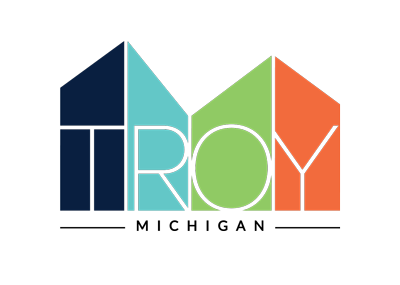

City of Troy — Digital Accessibility Strategy
Services Provided: Targeted Manual Audit, Remediation Roadmap, Staff Training

The Challenge
The City of Troy came to me through a referral from another Michigan city. They already understood something a lot of communities miss: their digital presence is bigger than their main website. Subsites, a mobile app, PDFs, and social content all reach residents, and all of it needs to be accessible. What they needed was a clear picture of where they stood and a plan that fit the budget they actually had.
My Approach
- Ran a targeted manual audit of the main site, subsites, and mobile app, focusing on what matters most to residents
- Gave a straight assessment of where things stood, with no sugarcoating and no scare tactics
- Built a practical roadmap and timeline the team could actually follow
- Trained staff across the organization, from accessibility fundamentals through applying them to everyday work like social media
The Results
Troy came away with an honest picture of their digital accessibility, a prioritized plan for improving it, and a staff better equipped to carry the work forward. The audit was targeted by design rather than exhaustive, which meant the budget went toward the issues with the biggest impact on residents.
Impact
Accessibility work doesn't have to start with a huge contract. Starting where it counts, with a clear plan and a team that understands why it matters, is often the difference between a report that sits on a shelf and real progress.